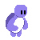

Questions / Réponses sur l'avenir en commun
Endossez le role d'un sceptique sur la faisabilité du programme de l'avenir en commun sous forme d'un question / réponse.
Pour plus d'intérêt, essayez de répondre vous même aux arguments avant de lire la réponse !
Ce projet est strictement personnel et n'est pas affilié à LFI.

Informations
Ce site n'est aucunement affilié à La France Insoumise. Il s'agit d'une initiative strictement personnelle, sans lien officiel avec le mouvement ni avec ses représentants. J'ai juste honteusement copié leur charte graphique.
Les contenus présentés peuvent contenir des erreurs, des imprécisions ou des informations devenues obsolètes. Ils ne constituent en aucun cas une parole officielle.
Le simulateur repose sur un système basique de questions et de réponses déjà rédigées à l'avance. Il ne génère rien de manière automatique et se contente d'afficher des échanges écrits au préalable.
Chacun est libre de proposer des corrections ou des améliorations en ouvrant une pull request sur le dépôt GitHub du projet.